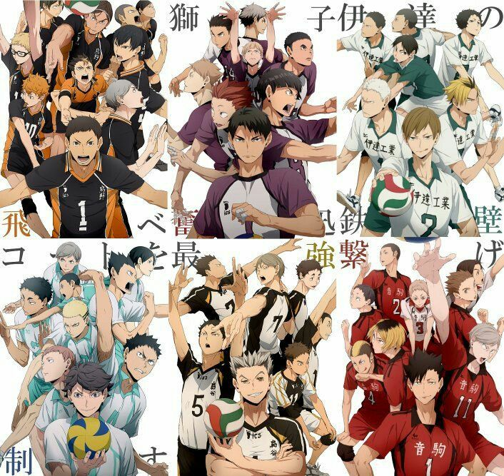

Haikyuu
Haikyu!! es una serie de manga escrita e ilustrada por Haruichi Furudate. Es serializada en la revista Weekly Shonen Jump de la editorial Shueisha desde el 20 de febrero de 2012 y actualmente continúa publicándose. El manga inicialmente comenzó como un one-shot publicado en la revista semanal Jump NEXT!, también parte de Shueisha. Hasta la fecha se han lanzado treinta y cinco volúmenes,y ha sido licenciado en Estados Unidos por VIZ Media.
El 6 de abril de 2014, comenzó a transmitirse una adaptación a serie de anime producida por el estudio Production I.G, terminando en septiembre de ese mismo año.Su segunda temporada comenzó el 3 de octubre de 2015.Una tercera temporada comenzó a transmitirse el 8 de octubre de 2016.También, se han anunciado una obra de teatro y cuatro películas recopilatorias del anime.
